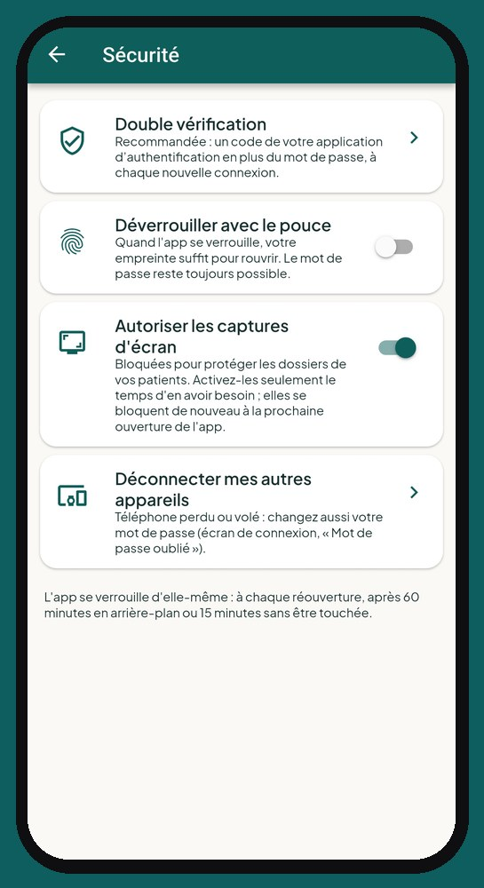
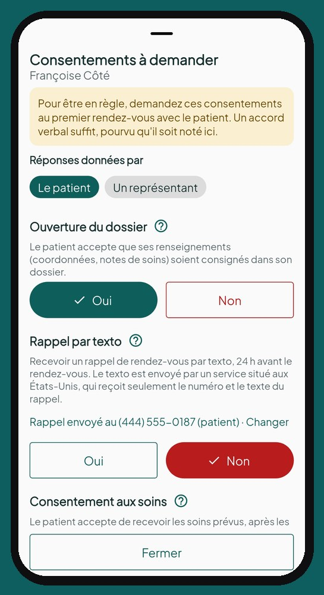
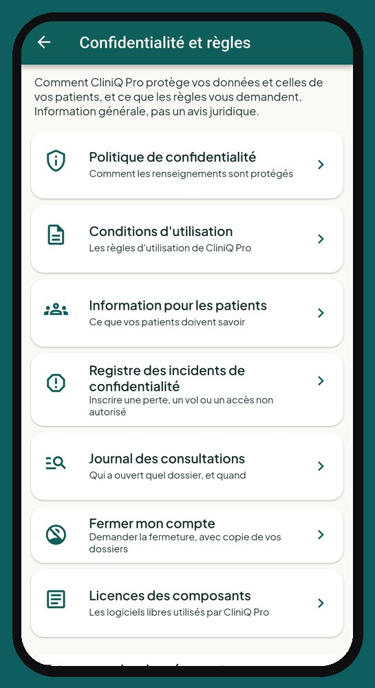

Logiciel de dossiers patients et Loi 25 : sécurité et confidentialité
Travailleur autonome en santé, en pratique privée, c'est vous qui répondez des renseignements de vos patients. CliniQ Pro est un logiciel et une application conçue pour vous aider à respecter la Loi 25 au Québec et les lois sur la vie privée ailleurs au Canada, sans vous compliquer la vie entre deux patients.
Vos données restent au Canada
Les fiches, notes, rendez-vous, factures, photos et documents sont hébergés au Canada, dans la région de Montréal. Ils sont chiffrés pendant l'envoi, et chaque professionnelle ne voit que ses propres données : le serveur refuse toute lecture des données d'un autre compte. Les photos de soins sont dans un espace privé.
Une application qui se verrouille toute seule
Mot de passe ou empreinte à la réouverture, verrouillage après 15 minutes sans être touchée, double vérification par code, captures d'écran bloquées et déconnexion à distance de vos autres appareils en cas de perte ou de vol.

Des notes que personne ne peut changer
Une note finalisée est signée et verrouillée. Les corrections s'ajoutent en notes tardives, ce qui garde la trace de l'original. Les dossiers ne sont jamais effacés : on les archive.
Les consentements, notés et datés
Consentement aux soins, ouverture du dossier, photos cliniques, communication à un tiers et rappels par texto : chaque réponse est gardée au dossier avec sa date, qu'elle vienne du patient ou de son représentant. Un retrait de consentement s'inscrit aussi.

Tenue de dossiers et Loi 25 : les registres déjà prêts
Le registre des incidents de confidentialité, le journal des consultations (qui a ouvert quel dossier, et quand) et la trace de chaque copie de dossier remise à un patient sont tenus par l'application et ne peuvent être ni modifiés ni effacés.

Transparence sur les services externes
Aucune note clinique n'est envoyée à un service d'intelligence artificielle. Pour le calcul des trajets, seules les adresses sont transmises, sans nom ni soins. Les rappels par texto ne contiennent jamais le nom du patient ni ses soins. La liste complète est dans notre politique de confidentialité.
Questions fréquentes
CliniQ Pro est-elle conforme à la Loi 25 ?
CliniQ Pro est conçue pour vous aider à respecter la Loi 25 : données au Canada, accès limité à vos propres dossiers, notes non modifiables, consentements datés, registre des incidents et journal des consultations. La conformité dépend aussi de vos pratiques : c'est vous, en pratique privée, qui répondez de vos dossiers. Information générale, pas un avis juridique.
Où sont hébergées les données de mes patients ?
Au Canada, dans la région de Montréal, chiffrées pendant l'envoi et protégées sur les serveurs.
Que faire si je perds mon téléphone ?
Verrouillez-le à distance, changez votre mot de passe, déconnectez vos autres appareils depuis Paramètres › Sécurité, puis inscrivez l'incident au registre. L'application se verrouille aussi d'elle-même.
Puis-je voir qui a ouvert le dossier d'un patient ?
Oui. Le journal des consultations inscrit chaque ouverture d'un dossier, d'une visite ou d'un bilan : date, heure, patient et écran. Il ne peut être ni modifié ni effacé.
Lancement le 1er janvier 2027
Voyez l'application écran par écran, puis réservez votre place : nous vous écrirons dès l'ouverture.
Voir l'applicationRéservez votre place
Une question ? soutien@cliniqpromobile.ca
Les fonctions
- Agenda et itinéraire
- Dossier patient et notes
- Reçus et factures
- Kilométrage automatique
- Dépenses et comptable
- Registre de stérilisation
- Questions et réponses
- Tarifs
- Logiciel pour clinique